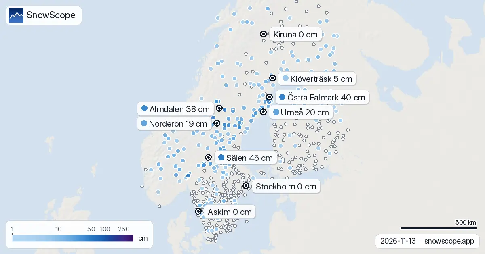

Snødybde i Pyhä og Luosto: 0 til 9 cm rundt fjellene, en snørik uke i vente (14. november 2026)
Rundt Pyhä og Luosto er snøen flekkete og tynn. Morgenen 13. november målte værstasjonen i Pelkosenniemi, 22 km unna på 156 m, 1 cm; Sodankylä Tähtelä målte 0 cm; Kemijärvi flyplass, på 208 m, hadde 9 cm, og Savukoski 6 cm. Våre 46 vintrer gir 15 cm som vanlig snødybde her 14. november, så området ligger etter. De neste sju dagene bør endre på det.
Se snøprognosen for Pyhätunturi - Luosto direkte i SnowScope-appenSnødybde, puddervarsler og 3D-kartet, gratis.
En tynn og ujevn start
Stasjonene viser to ulike novembermåneder. I sør og øst har Kemijärvi og Savukoski holdt et tynt snødekke hele uka, nå 6 til 9 cm. I vest og nord er Sodankylä og Pelkosenniemi nesten snøbare. Fjellene ligger midt imellom, og høyere, så de har trolig litt mer enn bygdene.
Vårt anslag for nysnø de siste sju dagene er under 1 cm, så dette er gammel snø, ikke ny.

Uka som kommer
Vi venter rundt 23 cm de neste sju dagene, med de første 8 cm de neste to dagene. De andre prognosene vi sjekker, går fra 31 til 54 cm på toppen av fjellet. Det holder seg kaldt, nesten uten regn, og snøen når helt ned i lavlandet. Regn med et ordentlig hvitt landskap til neste helg.
Normalt for årstiden
Våre tall gir en vanlig snødybde på 21 cm 21. november, 27 cm 30. november og 37 cm 15. desember. I én vinter av ti ligger det bare 3 cm 14. november, så en treg start er ikke uhørt. En middels vinter topper seg på rundt 76 cm, og bakken er hvit i omtrent 204 dager.
Åpningsdatoer
Pyhäs publiserte tabell over åpningstider starter første periode 27. november. Luosto tar sikte på å åpne bakkene 28. november 2026. Begge er avhengige av produsert snø for de første nedfartene.
Tips til skiløpere
- Stiene i Pyhä-Luosto nasjonalpark er steinete og bratte enkelte steder; med tynt snødekke er gode støvler bedre enn ski denne uka.
- Snø på myr som ikke har frosset, kan skjule våte partier; hold deg på merkede stier.
- Sjekk skisentrenes egne sider: Pyhä og Luosto åpner på ulike datoer.
Flere kart (eksterne nettsteder)
Referanser og kilder
- Meteorologisk institutt i Finland (FMI), åpne data (CC BY 4.0) en.ilmatieteenlaitos.fi/open-data
- Pyhä, offisiell side: åpningsdatoer og heisstatus, lest 2026-11-13 www.pyha.fi/fi/hiihtokeskus/rinteet
- Luosto, offisiell side: åpningsdatoer og heisstatus, lest 2026-11-13 www.luosto.fi/fi
Om tallene
Målt snø: morgenmålinger 13. november 2026 ved de offisielle værstasjonene i Sverige (SMHI åpne data), Finland (FMI åpne data, CC BY 4.0) og Norge (MET Norways stasjonsrapporter, CC BY 4.0, publisert av Ogimet). Norges nasjonale snøkart seNorge (NVE og MET Norway, NLOD) gir anslagene på et rutenett på 1 km for bakkene. Våre tall: SnowScopes prognose for de neste sju dagene i tre høyder i skisenteret, sammenlignet med uavhengige prognoser (ECMWF, ICON, GFS, GEM) for 14. til 20. november; snøhistorikk for 46 tidligere vintre (1980-81 til 2025-26), en modell av fortiden korrigert for høyde. Åpningsdatoer: skisentrenes egne sider, lest 13. november 2026. Løypelengde og antall heiser: kartlegging i OpenSkiMap.
Offisielle snøskredvarsler: EAWS – European Avalanche Warning Services
Siter denne rapporten
For forskning, undervisning eller presse: tallene og diagrammene kan brukes fritt under CC BY 4.0 med denne kildehenvisningen.
SnowScope (2026), Snødybde i Pyhä og Luosto: 0 til 9 cm rundt fjellene, en snørik uke i vente (14. november 2026), https://snowscope.app/blog/nb/2026/11/pyha-luosto-snow-depth-14-november-2026.html, hentet 2026-11-14
SnowScope (Atlas Labs). (2026, November 14). Snødybde i Pyhä og Luosto: 0 til 9 cm rundt fjellene, en snørik uke i vente (14. november 2026). SnowScope snow reports. https://snowscope.app/blog/nb/2026/11/pyha-luosto-snow-depth-14-november-2026.html
BibTeX
@misc{snowscope2026pyhaluostosnowdepth14nov,
author = {{SnowScope (Atlas Labs)}},
title = {Snødybde i Pyhä og Luosto: 0 til 9 cm rundt fjellene, en snørik uke i vente (14. november 2026)},
year = {2026},
month = nov,
howpublished = {\url{https://snowscope.app/blog/nb/2026/11/pyha-luosto-snow-depth-14-november-2026.html}},
note = {Published 2026-11-14 15:29 UTC; accessed 2026-11-14}
}· CC BY 4.0 · Metoder, data og verktøy →
Pyhätunturi - Luosto: snø og temperatur etter høyde, i vinter sammenlignet med i fjor (verktøy) →
Følg Pyhätunturi - Luosto
Gratis: en melding når nysnø er på vei, og prognosen hver morgen.
Flere snørapporter

Hundeeiere i Bergen, helgen 14. november 2026: bar bakke på Florida fredag, 5 cm bare oppe på Kvamskogen og en svært våt søndag. Bergens båndtvang hele året, de fire hundeluftegårdene og turveiene på Fløyen.

Målt snødybde i Sverige 13. november 2026: 133 av 322 stasjoner hvite, et belte fra Dalarna til Västerbotten med opptil 45 cm, et bart sør og et nesten bart nord rundt Kiruna.

Målt snødybde i Norge 13. november 2026: 37 cm på Tryvannshøgda over Oslo, 44 cm i Lyngen i Troms, 10 til 18 cm i innlandsdalene, bar bakke i Bergen, Trondheim og indre Finnmark.